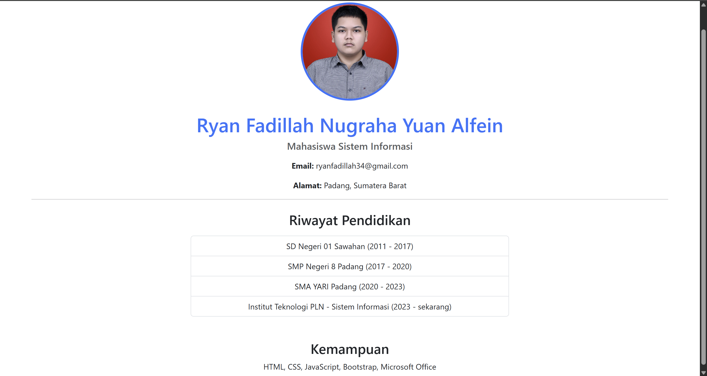

Dosen: Muhammad Fadli Prathama, S.Si., M.MSI.
Asisten: Davina, Karina, Clarenca, Izzat
INSTITUT TEKNOLOGI PLN – SISTEM INFORMASI – 2025
1. Mengapa menggunakan CSS dan JavaScript dalam pemrograman web?
CSS (Cascading Style Sheets) digunakan untuk mengatur tampilan dan gaya dari elemen-elemen HTML, seperti warna, font, layout, dan animasi. Tanpa CSS, tampilan web akan terlihat sangat sederhana dan tidak menarik.
JavaScript digunakan untuk memberikan interaktivitas pada halaman web, seperti validasi form, animasi dinamis, manipulasi elemen secara langsung, serta pengambilan data dari server (AJAX).
Kesimpulan: CSS mempercantik tampilan, JavaScript membuat web menjadi interaktif dan dinamis.
2. Bagaimana CSS dan JavaScript dapat diintegrasikan dalam pemrograman web?
CSS dan JavaScript bisa diintegrasikan ke HTML dengan tiga cara:
- Internal: ditulis langsung di dalam file HTML dengan tag
<style> dan <script>.
- Eksternal: menggunakan file terpisah (.css dan .js), lalu dipanggil ke HTML.
- Inline: langsung dalam atribut tag HTML, contoh
style="" atau onclick="".
Kesimpulan: cara eksternal lebih rapi dan mudah dikelola.
5. Contoh penggunaan Bootstrap
Membuat halaman pribadi dengan Bootstrap:
<div class="container text-center mt-5">
<img src="foto.jpg" class="rounded-circle" style="width:150px;">
<h1>Ryan Fadillah Nugraha</h1>
<p>2011-2017 : SD Negeri 01 Sawahan</p>
<p>2017-2020 : SMP Negeri 8 Padang</p>
</div>
Fungsi: Menampilkan profil secara menarik dan responsif menggunakan Bootstrap. Komponen seperti container, gambar, dan text-center membuat halaman terlihat profesional di berbagai perangkat.
Screenshot hasil running halaman web:
